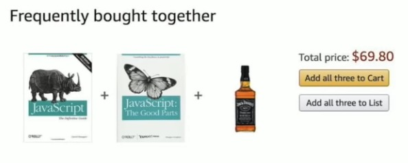

Introducción básica al lenguaje Javascript (JS en adelante).

This is a good starting point to learn Javascript.
https://developer.mozilla.org/en-US/docs/Learn/Getting_started_with_the_web/JavaScript_basics
Probably the best modern javascript tutorial
http://javascript.info/
A good manual (in Spanish, but a little bit outdated)
https://www.tutorialesprogramacionya.com/javascriptya/
Another manual
https://www.w3schools.com/js/default.asp
https://www.w3schools.com/html/default.asp
https://www.w3schools.com/css/default.asp
Online IDE (Integrated Development Environment)
https://codepen.io/
https://jsfiddle.net/
https://glitch.com
https://vite.new/vanilla
https://repl.it/r
https://plnkr.co/edit/?open=lib%2Fscript.js
Curso de javascript con pequeños desafíos
https://www.freecodecamp.org/learn/javascript-algorithms-and-data-structures/basic-javascript/
JS permite introducir interactividad en una página web haciendo uso de las API del navegador (API = Application Programming Interface) que permite que nuestro código interactúe con el navegador (por ejemplo el DOM, Geolocalización, Canvas, Fetch,...).
Los archivos de código JS se ejecutan en el orden en el que se encuentran en el HTML. Esto es importante porque un fichero JS puede hacer referencia a un elemento HTML que todavía no se ha cargado en el navegador. Para evitar esto se utiliza el atributo defer o async:
Dentro del <head>:
<script defer src="js/script1.js"></script> <script async src="js/script2.js"></script> <script defer src="js/script3.js"></script>
Diferencia entre async y defer:
Cuando el navegador encuentra código JS lo ejecuta inmediatamente de arriba a abajo, por lo que el orden de los bloques de código de JS también es importante.
Una variable es simplemente un trozo de memoria con un nombre, de esta manera podemos almacenar valores dentro. Podemos utilizar casi cualquier carácter para nombrar la variable, pero es siempre juicioso utilizar solo los caracteres básicos del ASCII estándar (el alfabeto en inglés), dígitos, el símbolo $ y el guión bajo (_).
El primer carácter del nombre no puede ser un número, además, los puntos (.) y los espacios en blanco no están permitidos.
Para declarar una variable, podemos utilizar la palabra reservada let.
Para declarar una constante, podemos usar const.
Nota: en textos antiguos, ejemplos viejos o código de gente del siglo pasado podemos seguir encontrando var para declarar variables. Es una mala idea usarlo porque utiliza un scope o ámbito de variables muy particular.
Comprueba los ejemplos de abajo, sólo tres de ellos harán que se muestre un error ¿puedes averiguar cuáles?
let ño = 56;
let _ño = 56;
let _$ñó = 56;
let ñ_ó = 56;
let ñ.a = 56;
let ñ_ó_ = 56;
let $ño _1 = 56;
let ñ2_ó = 56;
let ñ_ó2 = 56;
let 2ño = 56;
let ñ_2ó = 56;
let a = 56;
let $ = 56;
let _ = 56;
let $_ = 56;
Según https://developer.mozilla.org/en-US/docs/Tools/Web_Console, la consola web:
En el ejercicio 2.1, puedes intentar adivinar la respuesta, pero deberías utilizar la consola del navegador para comprobarlo rápidamente. Para abrir la consola web en tu navegador, puedes presionar F12 o SHIFT+F5, luego ve a la pestaña de la consola y escribe cada comando para verificar si generan un error.
Prueba este código en la web console:
let msj = "Mi archienemigo es el brócoli";
alert (msj);
console.log("El té es agua sucia. ¡Larga vida al café!");
Puedes comprobar el valor de una variable tecleando su nombre en la consola, por ejemplo escribe msj para recuperar el valor de la variable msj.
Cuando declaras una variable en javascript no necesitas declarar el tipo de dato que almacenará (se determinará al ejecutarse el código, por eso es de tipado dinámico). En otros lenguajes como C o Java tienes que indicar el tipo de la variable (ej.: int a; float b;).
A variable en JS puede contener cualquier dato y el tipo puede cambiar durante la ejecución (por ello es debilmente tipado).
Por ejemplo:
//This piece of code will be totally correct
let dato = "Javier";
let nombreCompleto = dato + " Mancera"; //concatenate strings with +
dato = 'single quotes are ok too!'
dato = false; //also boolean values
dato = true;
dato = 356; //numbers
let b = 356/5; //b will be 71.2 (a float number)
b = null; //special value, means 'nothing'
let c; //c is undefined, a special value used when a variable doesn't have a defined value yet
Recomendaciones:
Importante 1: si declaras una variable dos veces obtendrás un error.
//Redeclaration error
let dato = "Juan";
let dato = "Pedro"; // This will throw this error: "SyntaxError: redeclaration of let nombre"
Importante 2: No puedes usar variables que no han sido declaradas antes (recuerda que es case-sensitive). Se autodeclaran las variables globales al asignarles un valor inicial sin usar let, const o var (mala idea).
//Se pueden usar variables sin let, const o var, pero no es recomendado (serán globales)
semanas = 5
let dias = 7 * dias
//Reference error
let hora = 5;
let minutos = horas * 60; // This will throw this error: "ReferenceError: horas is not defined"
let segundos = Hora * 3600; // This will throw this error: "ReferenceError: Hora is not defined"
let copia = valor //Reference error: valor is not defined
Importante 3: Deberíamos evitar el uso de caracteres fuera del ASCII estándar
let имя = 'technically there is no problem but they are not very readable';
let 我 = 'we should avoid these characters';
Como en cualquier otro lenguaje hay algunas palabras que están reservadas para el propio lenguaje.
List of reserved words: https://developer.mozilla.org/en-US/docs/Web/JavaScript/Reference/Lexical_grammar#Keywords
//These declarations will throw an error
let true=5; //SyntaxError: unexpected token: boolean literal 'true'
let function="hola"; //SyntaxError: unexpected token: keyword 'function'
let return = 45; //SyntaxError: unexpected token: keyword 'return'
let let = "caracola"; //SyntaxError: a lexical declaration can't define a 'let' binding
Algunas ideas:
/***** MAIN *****/
let a = 5; //a existirá en todo el código porque está declarada el MAIN
{
var b = 5; //b existe en el ámbito de la función (en este caso todo el MAIN)
let c = 5; //c sólo existe en este bloque de código (let tiene ámbito de bloque)
a = a + 1; //a existe en todo el código por lo que podemos usarla sin problemas
}
b = b + 1; //se declaró con var, así que tiene de ámbito la función aunque se declaró en un bloque
console.log( a +", "+ b); //Imprimirá 6, 6
console.log( c ); //dará un error porque c no existe en esta porción de código
Js posee unos pocos tipos de datos nativos y usa conversiones automáticas.
En JS existen los siguientes siete tipos de datos:
Se puede usar el operador typeof para saber el tipo de una variable: typeof "foo"
Se puede comprobar si una expresión es NaN con la función isNaN()
Javascript en un lenguaje de tipado dinámico, por lo que una variable puede almacenar diferentes tipos de datos con el timpo lo que puede ocasionar comportamientos inesperados.
Ejecuta el código de abajo u fíjate en el uso de Number para convertir una cadena a un número. También se puede usar String para convertir un número a cadena o Boolean para un booleano.
alert( "6" / "2" ); // 3 The expected result
alert( 6 + '2' ); // '62' (the string is on the right)
alert( '6' + 2 ); // '62' (the string is on the left)
let dato = 6; //is a number
dato = "6"; //now a string
let num = Number(dato); //num is 6 (convert a string to a number)
alert( num + 2); // 8
alert( num + Number('2') ); // 8
alert( dato + +"2" ); //62
alert( +dato + +"2" ); //8
La mayoría de las veces no tenemos que preocuparnos, pero es importante tenerlo en cuenta por ejemplo al leer de un textbox en un formulario.
En JS hay valores que se convertirán a true o false automáticamente:
1/0 --> Infinity
"10" + 5 --> 105
"10" - 5 --> 5
'1' + 1 - 1 === 10
"Hola" / 2 --> NaN
("Hola" / 2)**1 --> NaN
("Hola" / 2)**0 --> 1
('b'+'a'+ +'a'+'a').toLowerCase() --> banana
0 equivale a false
"0" equivale a true
" " equivale a true
4 + 5 + "px" --> "9px" // ¡El orden importa! Se lee de izq a der
"$" + 4 + 5 --> "$45"
2e3 --> 2000 // Notación científica 2e3 = 2*10^3
Number(null) --> 0
Number(undefined) --> NaN
Number("") --> 0
Number(" ") --> 0
Number("x") --> NaN
Number("010") --> 10
Number("0 10") --> NaN
true + true + true --> 3
[] + [] --> ""
[] + 3 --> "3"
{} + 3 --> 3
[] + {} --> "[object Object]"
{} + [] --> 0
Javascript representa los números usando 64 bits (usa concretamente el estándar IEEE 754), por lo que el resultado de cualquier operación se tiene que representar con el número de 64 bits más cercano, lo que da lugar a jocosos resultados:
0.1 + 0.2 // 0.30000000000000004 0.3 - 0.1 // 0.19999999999999998 0.1 * 3 // 0.30000000000000004
Desde 2015 JS ha evolucionado mucho y se han ido incluyendo muchas novedades para mejorar el lenguaje, incluyendo modificaciones de cómo funciona el código que permiten además optimizaciones automáticas en la ejecución del mismo.
Para más información podemos leer el siguiente artículo de John Resig: https://johnresig.com/blog/ecmascript-5-strict-mode-json-and-more/
Para activar estas novedades (y siempre querremos activarlas) la primera línea de nuestro script será:
"use strict"; // Resto del código
Según https://developer.mozilla.org/en-US/docs/Web/JavaScript/Reference/Strict_mode estas son algunas ventajas:
Prueba a ejecutar el código con y sin el modo estricto. En este ejemplo se pretende manejar información sobre un imán que se va modificando, sin embargo hay un error tipográfico que se ha colado.
"use strict";
let potenciaIman = 5;
let posicionIman ="arriba";
// Aquí vendrá mucho más código,
// Llamadas a funciones
// Montones de cálculos
potenciaImam = 4;
posicionIman ="abajo";
Con el "use strict"; el error será localizado fácilmente (se mostrará un error indicando la línea), sin el modo estricto ni siquiera se mostrará una advertencia (ni mucho menos un error) por lo que nos podemos volver locos para arreglar el problema. Es por ello que se recomienda activar el modo estricto.
Comparación:
Aritméticos:
Cadenas:
Asignación:
Booleanos:
Otros operadores:
Ejercicio, la posición del ++: ¿Qué muestra este código?
let counter = 1; let a = counter++; alert(a); let b = ++counter; alert(b);
El factor de precedencia de los operadores funciona como en el resto de los lenguajes de programación.
A pesar de las modas, es importante comentar las partes del código más complciadas para poder entenderlas pasado un tiempo (meses o años). No comentar el código es de niñatos.
Podemos usar // para introducir comentarios de una única línea y /* */ para indicar un comentario de varias líneas.
También se puede usar un tipo especial de comentarios que se usan para generar documentación de nuestro código automáticamente. Más información en los siguientes enlaces:
https://en.wikipedia.org/wiki/JSDoc
https://devdocs.io/jsdoc/about-getting-started
//Single line comment:
let semanas= 12; //declaración de una variable
/* Block comment example:
Multiplicamos ahora la variable semanas por 7 para saber
cuántos días hay en 12 semanas */
let dias = semanas * 7;
//Special JSdoc comment:
/**
*
* Devuelve la longitud de una circunferencia de radio r
*
* @author: Javier Mancera
* @param {number} r - El radio del círculo.
*/
function longitud(r){
return 2*Math.PI*r;
}
Crea un fichero javascript que calcule la nota media de un alumno que ha obtenido las siguientes notas:
4, 8, 9, 7, 2, 6
Haz que se muestre el resultado en la consola.
Crea un fichero javascript que calcule el volumen de una esfera de radio 1 y el volumen de una esfera de radio 2.
El volumen de una esfera se calcula como 4/3 multiplicado por Pi multiplicado por el radio de la esfera al cubo.
Haz que se muestren los dos resultados en la consola.
Nota: Un valor exacto de Pi se puede obtener en javascript como Math.PI
Las funciones en JS se pueden definir de varias maneras, la más sencilla es esta:
function nombreFuncion( param1, param2, param3 ){
/* código */
return valor;
}
Se puede añadir un manejador de evento a un elemento (por ejemplo un botón) de esta manera:
elemento.addEventListener( evento, nombreFuncion );
Algunos eventos básicos:
Javier Mancera Fernández
https://www.youtube.com/@Profesorinfo-x